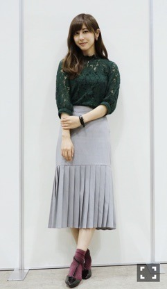

| 2016/10 23 Sun | 久しぶりに(´>∀<｀)ゝ |
ちはるーむへようこそ！！
今日は久しぶりの個別握手会でした◎
来てくれた方とゆっくりと話せて、
この時間本当に好きだな〜と
改めて感じました。
皆さんの近況だったり
ブログやモバメ、雑誌の感想だったり
直接聞けるとより嬉しさが増す。
そしてレーンに沢山人が
並んでくださってるのを見ると
胸が熱くなってくる。
並んでくださる皆さんは大変かもしれないけど
一緒に喜んでくれて、
嬉しい悲鳴だって言ってくれる。
私を幸せな気持ちにしてくれてありがとう。
皆さん良かったら会いに来てください。
心から待ってます！！
-------------------------♡
今日の #chihaOOTD

tops : ZARA
skirt : DAMMY
earring : HAND MAID
shoes : JELLY BEANS
秋っぽく、レーストップスの緑と
イヤリングと靴下の赤を基調としました◎
このレーストップスお気に入り！！
緑だから甘過ぎないし、
何より無地のボトムスと合わせやすい。
素材感も色も秋にはぴったりだね♪
あとお気に入りなのは、
このハンドメイドのイヤリング。
オシャレなハンドメイドアクセサリーショップで見つけました◎
お花が入っていて、
とっても可愛いんだよ〜♡
中の紫がさりげなくグラデーションになっていて綺麗！

-------------------------♡
♬ ChihaMusic
「UNIVERSE」ShuuKaRenさん
E-girlsの萩花さんと夏恋さんの
姉妹ユニット！
私も姉妹なので憧れてしまいます◎
素敵な姉妹関係( ¨̮ )
曲もカッコいい！
そしてオシャレ！
"高く飛べば飛ぶほど
景色は変わって見えるはず
その場所まで行きたい
行けると信じて疑わない"
歌詞までもカッコいい。
六大学野球、明治が春秋優勝！
嬉しい。。
おめでとうございます！
そしてお疲れ様です！
いつか応援に行きたいです。
明日はストリートジャック発売日！
ぜひみてね(﹡ˆ ˆ﹡)
おやすみ〜
斎藤ちはる
コメント(207)
2016/10/23 23:36